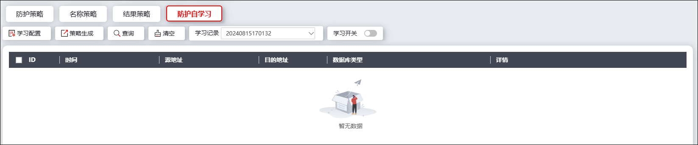
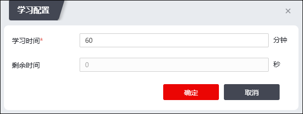
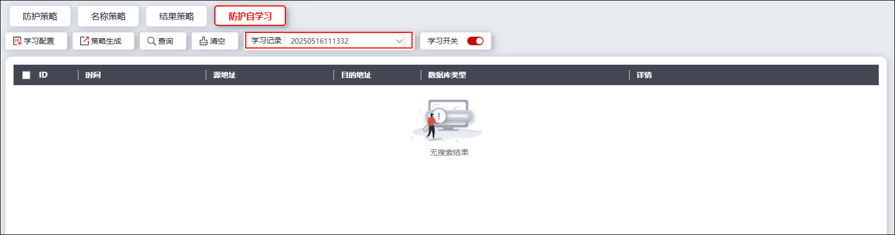

NGFW支持防护自学习功能，通过一定时间内的自学习掌握当前网络环境中数据库行为的特点，并根据自学习记录生成访问控制策略。
配置防护自学习功能的详细步骤如下：
| 步骤1 | 选择 ，激活“数据库防护”下的“防护自学习”页签，界面如下图所示。 |

| 步骤2 | 配置学习策略 |
点击“学习配置”，在弹出窗口中配置单次自学习的学习时长，界面如下图所示。

若当前处于学习状态中，“剩余时间”处会显示当前学习进程的剩余时间；点击【确定】保存当前学习配置。
| 步骤3 | 开始自学习&查看学习结果 |
配置完学习时长后，切换界面上方的“学习开关”至开启状态，即可开始数据库防护自学习。
系统会根据自学习任务开始的时间对学习记录进行命名，在界面上方的下拉菜单中可以选择查看不同的学习记录信息，界面如下图所示。

学习记录包含数据库行为记录的发生时间、源/目的地址和对应的数据库类型。点击“详情”列的“”，可查看对应记录的详细信息。
| 步骤4 | 生成防护策略 |
NGFW可以以自学习模块记录的数据库行为作为基础生成访问控制策略，进一步精准控制数据库行为。
选中数据库行为记录，点击“策略生成”会生成防护策略（位于 菜单），在菜单中选中策略类型为“自学习”的防护策略，点击“访问控制生成”后会弹出访问控制策略配置页面，管理员可进行自定义配置。